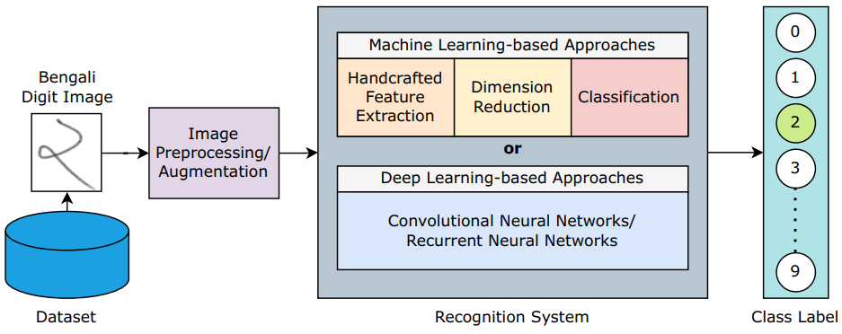

|
Sabbir Ahmed I am working as an Assistant Professor in the Dept of CSE at Islamic University of Technology (IUT). At present, I am a member of the Computer Vision lab, advised by Prof. Hasanul Kabir. Before that, I received my M.Sc. and B.Sc. (Gold medalist) in CSE from IUT, respectively, in the year 2022 and 2017. My current research is in improving few-shot learning algorithms for image classification tasks. Besides, I've worked with different applications of deep learning in the fields of Computer Vision and Natural Language Processing, such as, leaf disease classification, gait analysis, traffic sign detection, text summarization, handwritten digit recognition, etc. Email / CV / Google Scholar / LinkedIn / ResearchGate / Facebook / |
| Research Selected Publictions [out of published Journals(05), Conferences(20), and Preprints(04)] (full publication list) |
 |
A Vision-Language Multimodal Framework for Detecting Hate Speech in Memes |
|
Decoding depression: Analyzing social network insights for depression severity assessment with transformers and explainable AI |
|
|
Unveiling the essence of poetry: Introducing a comprehensive dataset and benchmark for poem summarization
NERvous About My Health: Constructing a Bengali Medical Named Entity Recognition Dataset
BanglaCHQ-Summ: An Abstractive Summarization Dataset for Medical Queries in Bangla Conversational Speech |
|
|
Improving Zero-Shot Semantic Segmentation using Dynamic Kernels |
|
|
GaitGCN++: Improving GCN-based gait recognition with part-wise attention and DropGraph |
|
|
Rethinking Cooking State Recognition with Vision Transformers |
|
|
Recognizing Bangladeshi Traffic Signs in the Wild |
|
|  |
Two Decades of Bengali Handwritten Digit Recognition: A Survey |
 |
Less is More: Lighter and Faster Deep Neural Architecture for Tomato Leaf Disease Classification |
 |
Livestock Management With Unmanned Aerial Vehicles: A Review |
 |
CSVC-Net: Code-Switched Voice Command Classification using Deep CNN-LSTM Network |
Reviewer Experience
IEEE Access (6) (Q1)
Engineering Applications of Artificial Intelligence (1), Elsevier (Q1)
Connection Science (1), Taylor & Francis (Q2)